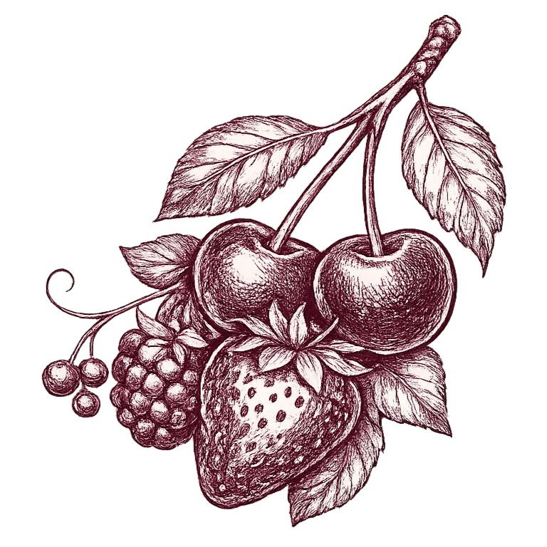
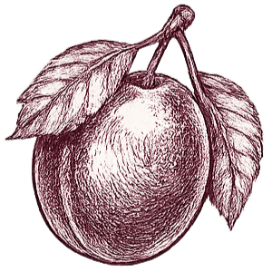
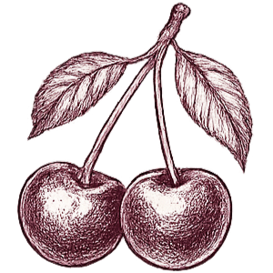
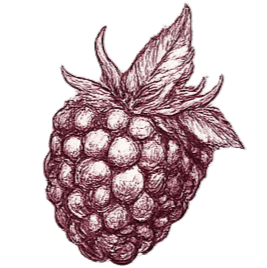
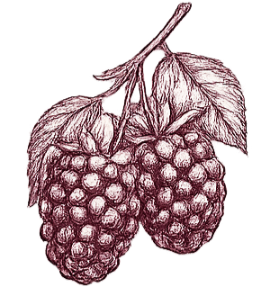

Distribución geográfica
dónde se encuentran los principales establecimientos vitivinícolas
Perfil de gusto
dónde se ubica el vino promedio mundial
Frutal
Amaderado
Denso
Suave
Promedio vino mundial
Precio: USD 38
Puntaje: 89 pts
Frutal-Amaderado: 0.15
Suave-Denso: 0.05
Precio: USD 38
Puntaje: 89 pts
Frutal-Amaderado: 0.15
Suave-Denso: 0.05
Promedio vino mundial
Top 5 notas aromáticas más frecuentes en vinos argentinos
lo que encontrarás en la copa

Frutos rojos

Ciruela

Cereza

Frambuesa

Mora
Maridajes por varietal
qué uva acompaña mejor cada plato
Wine Folly (winefolly.com)
Consumo per cápita por género
Mujeres
1.3 copas / semana
Hombres
4.7 copas / semana
OMS (Global Status Report on Alcohol and Health, 2019).
1 copa = 150ml a 12% vol. ≈ 14g de alcohol puro.
La cosecha y las estaciones
cuándo se cosecha la uva en argentina
INV (Instituto Nacional de Vitivinicultura)